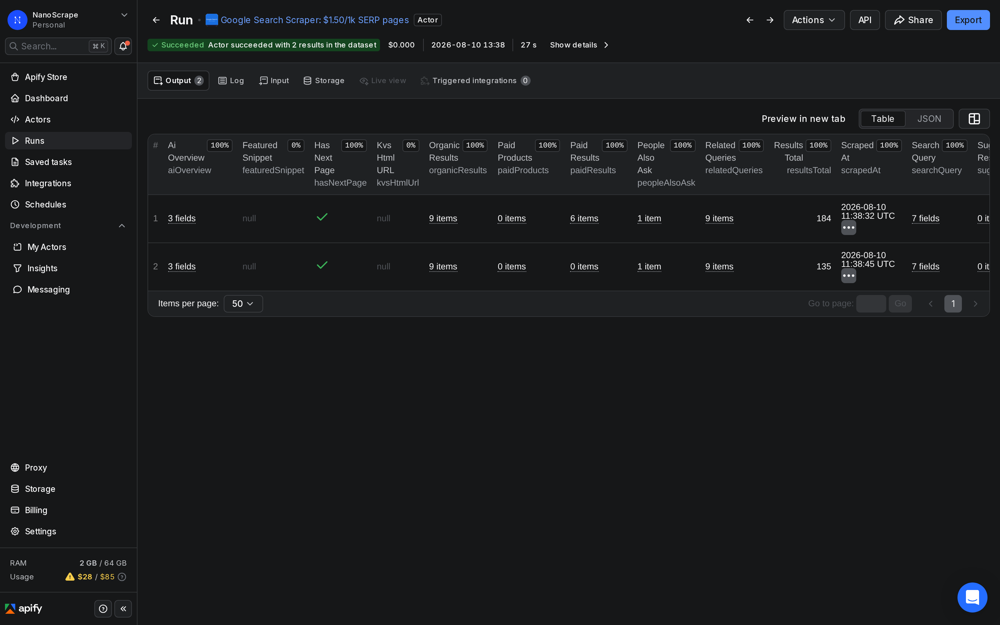
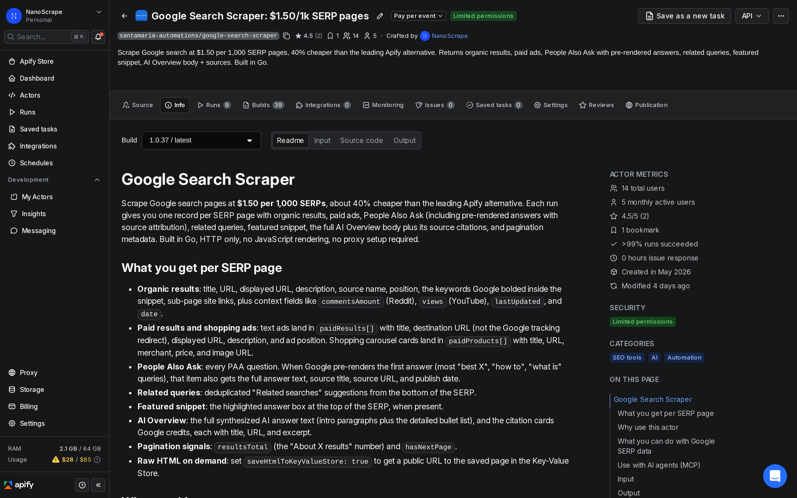
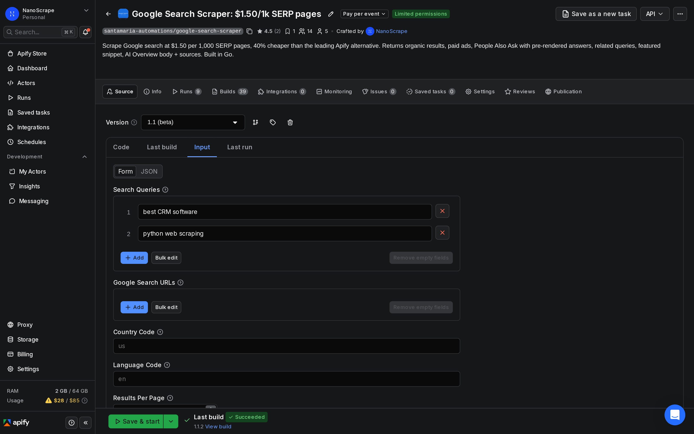
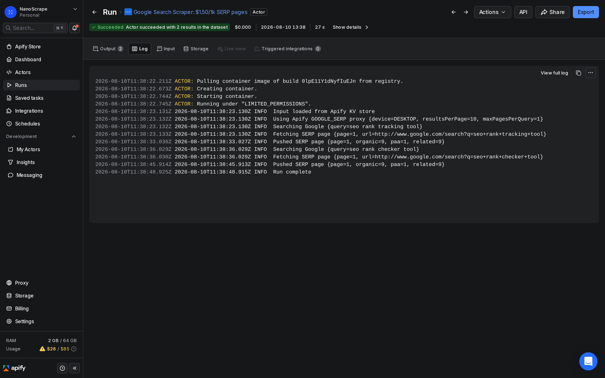

How to Build an SEO Rank Tracking Tool with Google Search Scraper
Dedicated rank trackers charge $50 to $200 a month for what is essentially a scheduled Google search with a position lookup. The NanoScrape Google Search Scraper on Apify does the same thing for $1.50 per 1,000 SERP pages, with no monthly subscription. You give it a list of keywords, it scrapes Google, and you get back a structured dataset with every organic position, paid ad, People Also Ask question, AI Overview, and related query on each page. Schedule it daily and you have a full rank tracker for a fraction of the cost. This guide walks through setup, scheduling, and how to find your domain in the results.

In this tutorial
- What you get
- Prerequisites
- Step 1: Create a free Apify account
- Step 2: Open the Google Search Scraper
- Step 3: Build your keyword list
- Step 4: Run and find your domain
- Step 5: Schedule daily rank tracking
- Advanced: multi-country and competitive tracking
- Connect to AI agents via MCP
- Key input and output fields
- What it costs
- FAQ
What you get
The NanoScrape Google Search Scraper runs on Apify and returns one dataset row per SERP page. Each row contains everything Google shows for that query: the ordered list of organic results with their positions and URLs, paid ads, People Also Ask questions (with pre-rendered answers when Google provides them), related search suggestions, the featured snippet, and the full AI Overview text with source citations.
- Organic results with position: each result includes its title, URL, description, display URL, bolded keywords, position number, and source site name. Position 1 is the top result.
- AI Overview body and sources: the full synthesized AI answer text and the citation cards Google credits, each with title, URL, and excerpt.
- People Also Ask with answers: every PAA question on the page. When Google pre-renders the first answer (most informational queries), you also get the answer text, source title, source URL, and publish date.
- Paid results and shopping ads: text ads with destination URL (not Google's tracking redirect), description, and position. Shopping cards with title, merchant, price, and image URL.
- Related queries: deduplicated related search suggestions from the bottom of the SERP.
- Featured snippet: the highlighted answer box at the top of results when present.
- Pagination signals:
resultsTotal(the displayed result count) andhasNextPage.
For rank tracking, the key field is organicResults. Each item has a position integer and a url field. To check your ranking for a keyword, search for your domain in the url values and read the position of the matching entry.
Prerequisites
- A free Apify account. The free tier gives $5 of usage credit every month, enough for about 3,300 SERP pages.
- A list of keywords you want to track. These are usually the search queries you want your site to rank for.
- Your domain name (for example,
yoursite.com) so you can identify your own entries in the results.
Create a free Apify account
- Open the actor page on Apify and click Try for free.
- Sign up with Google or email. The form takes about a minute.
- You land on the actor's input form inside Apify Console. The $5 free credit is added automatically.
Open the Google Search Scraper
After signing in you are on the actor's page. The Information tab shows pricing, output field descriptions, and example inputs. The Input tab is where you enter your keyword list.

Build your keyword list
Click Input in the left sidebar. Enter one keyword per line in the Search Queries field. Each keyword runs as a separate Google search and produces one dataset row per SERP page.
{
"queries": [
"best project management software",
"project management tool for small teams",
"free project management app"
],
"countryCode": "us",
"languageCode": "en",
"resultsPerPage": 10,
"maxPagesPerQuery": 1
}Key input settings for rank tracking:
queries: your keyword list. Use the exact phrasing your audience types into Google.countryCode: ISO 3166-1 alpha-2 code for the country whose results you want (e.g.us,gb,de). Determines which regional index Google uses.languageCode: ISO 639-1 code for the SERP language (e.g.en,de,fr). Default isen.resultsPerPage: how many organic results to request per page. Default 10 gives the richest output including pre-rendered PAA answers and AI Overview details. Set to 100 if you want more results per request and don't need full feature data.maxPagesPerQuery: how many SERP pages to fetch per keyword. Set to 1 for position-1-to-10 tracking. Increase to 2 or 3 to also track positions 11 to 30.mobileResults: set totrueto check mobile rankings instead of desktop.forceExactMatch: wraps the keyword in quotes for verbatim matching. Leave off for normal rank tracking.

Run and find your domain in the results
- Click Start at the bottom of the Input tab.
- The run opens automatically. The Log tab shows one line per SERP page fetched.
- When you see Status: SUCCEEDED, click Dataset in the left sidebar.
- In the Dataset table, open any row. Look at the
organicResultsarray. Each entry has aurland apositionfield. - Search for your domain name in the
urlvalues. The matching entry'spositionis your current rank for that keyword.

To automate the position lookup, export the dataset as JSON and filter with a script. Here is a minimal example that prints your domain's rank for each keyword:
const data = require('./dataset.json');
const myDomain = 'yoursite.com';
for (const row of data) {
const keyword = row.searchQuery.term;
const match = row.organicResults.find(r => r.url.includes(myDomain));
const rank = match ? match.position : 'not in top results';
console.log(`${keyword}: position ${rank}`);
}maxPagesPerQuery to 3 to also check positions 11 to 30.Schedule daily rank tracking
A one-off run shows you today's rankings. To track changes over time, schedule the actor to run on a regular cadence:
- In Apify Console, open the Google Search Scraper actor and click Schedules in the left sidebar.
- Click New schedule. Give it a name like "Daily rank check".
- Set the cron expression. For a daily run at 6 AM UTC:
0 6 * * *. For weekly on Mondays:0 6 * * 1. - In the Input field, paste your keyword list as JSON (the same input you used in Step 3).
- Click Save. Apify runs the actor automatically at each scheduled time and stores each run's dataset separately.
Each scheduled run produces its own dataset with a timestamp in the run metadata. To compare rankings across dates, fetch multiple datasets by run date via the Apify API:
# List recent runs with their dataset IDs
curl -s "https://api.apify.com/v2/acts/santamaria-automations~google-search-scraper/runs?token=YOUR_TOKEN&limit=7" \
| jq '.data.items[] | {startedAt, defaultDatasetId, status}'Advanced: multi-country and competitive tracking
The actor supports two patterns for more advanced rank tracking scenarios.
Multi-country tracking
To track the same keyword in multiple countries, run the actor once per country with the appropriate countryCode and languageCode. You can also pass raw Google search URLs via searchUrls to preserve any additional filters or parameters already in the URL:
{
"searchUrls": [
"https://www.google.co.uk/search?q=project+management+software&gl=gb&hl=en",
"https://www.google.de/search?q=project+management+software&gl=de&hl=de"
],
"resultsPerPage": 10,
"maxPagesPerQuery": 1
}Competitive tracking
To monitor competitors, use the same approach as for your own domain. Run the actor against your target keywords, then search the organicResults for each competitor's domain. You can also enable extractAds to see which competitors are bidding on paid placements for the same queries:
{
"queries": [
"best project management software",
"project management tool for teams"
],
"countryCode": "us",
"extractAds": true
}With extractAds: true, the actor runs each query with rotated proxy sessions to maximize ad discovery. Paid results appear in paidResults[] (text ads) and paidProducts[] (shopping carousel cards).
Connect to AI agents via MCP
The actor works as a Model Context Protocol (MCP) tool. Paste this server URL into any MCP-compatible client (Claude Desktop, Claude.ai, Cursor, VS Code, LangChain, LlamaIndex):
https://mcp.apify.com?tools=santamaria-automations/google-search-scraper
Once connected, prompt your AI agent in plain English and it calls the actor with the right parameters:
Check where our domain example.com ranks for 'project management software' and 'team collaboration tool' in the US.
Clients that support dynamic tool discovery receive the full input schema automatically, so the model fills in all fields without you specifying parameters manually.
Key input and output fields
Input fields
queries: array of keyword strings. Each runs as a separate Google search.searchUrls: optional array of raw Google search URLs. All filters in the URL are preserved.countryCode: ISO 3166-1 alpha-2 country code (defaultus). Controls which regional index Google uses.languageCode: ISO 639-1 language code (defaulten). Controls the SERP interface language.resultsPerPage: number of results per page, 10 to 100 (default 10). Stick with 10 for the richest feature data.maxPagesPerQuery: how many SERP pages to fetch per keyword, 1 to 10 (default 1).mobileResults: boolean. Use Google's mobile interface (defaultfalse).forceExactMatch: boolean. Wrap queries in quotes for verbatim matching (defaultfalse).includePeopleAlsoAsk: boolean. Include PAA questions in the output (defaulttrue).includeRelatedSearches: boolean. Include related search suggestions (defaulttrue).extractAds: boolean. Extract paid text ads and shopping carousel cards with session rotation (defaultfalse).saveHtmlToKeyValueStore: boolean. Save raw HTML of each SERP to the Key-Value Store (defaultfalse).
Output fields per row
searchQuery: object with the original query term, constructed URL, device type, page number, domain, country code, and language code.organicResults: array of {position,title,url,displayedUrl,description,websiteTitle,emphasizedKeywords,siteLinks}. Position starts at 1.paidResults: array of text ads with destination URL (not Google's redirect), description, and ad position. Present whenextractAds: true.paidProducts: array of shopping carousel cards with title, merchant, price, URL, and image URL.featuredSnippet: the highlighted answer box object, ornullwhen absent.peopleAlsoAsk: array of {question,answer,title,url,date}. Answer text is present when Google pre-renders it.relatedQueries: array of {title,url} related search suggestions.aiOverview: object with the AI Overview body text and citation cards, ornullwhen absent.resultsTotal: the approximate total result count Google displays.hasNextPage: boolean, whether a page 2 exists.scrapedAt: ISO 8601 timestamp of when this row was collected.
What it costs
The actor charges per SERP page scraped, not per run or per keyword.
- Actor start: $0.001 per run (a flat one-time fee).
- SERP page scraped: $0.0015 per page ($1.50 per 1,000). Each keyword with
maxPagesPerQuery: 1counts as one SERP page. - Paid ads add-on: $0.0015 per SERP page when
extractAds: true. This doubles the cost for those pages since the actor re-queries with rotated sessions.
The Apify free tier gives $5 of credit every month. At $0.0015 per SERP page that covers about 3,300 keyword checks per month at no cost. For 100 keywords checked daily that is about 3,000 pages per month, within the free tier.
FAQ
Does this scraper use the official Google Search API?
No. It scrapes Google Search pages directly without using the Custom Search JSON API or any other official Google API. You only need an Apify account.
How accurate are the rank positions compared to a dedicated SEO tool?
Position data comes directly from the Google SERP returned by Apify's GOOGLE_SERP proxy. The same factors that affect any rank tracker apply: results can vary slightly by location, browser history personalization, and search context. For consistent results, use the same countryCode and languageCode in every run and run at the same time of day.
Can I track rankings in more than one country?
Yes. Run the actor once per country with the appropriate countryCode. Alternatively, pass raw Google search URLs via searchUrls if you already have country-specific search links.
How many keywords can I track in one run?
There is no hard limit on the number of keywords in a single run. In practice, batches of 100 to 500 keywords complete in a few minutes. For very large keyword lists (thousands), consider splitting into multiple scheduled runs.
What is the difference between resultsPerPage 10 and 100?
With resultsPerPage: 10 (the default), each page returns the top 10 results and Google includes the richest feature data: pre-rendered PAA answers, full AI Overview text, and more complete featured snippets. With resultsPerPage: 100, you get up to 100 results per page but some of those extra feature fields may be absent or less complete. For rank tracking where you primarily care about positions 1 through 10, the default of 10 is the better choice.
Can I run it on a schedule via the API?
Yes. From the Apify Console you can set up a cron schedule directly on the actor. You can also call it programmatically via the Apify API or the JavaScript/Python SDKs. The run endpoint is POST /v2/acts/santamaria-automations~google-search-scraper/runs.
Related resources
- Google Search Scraper actor page: Full specs, all input parameters, output field reference, and pricing details.
- Reddit Sentiment Analysis: Track how people talk about your brand or competitors on Reddit alongside your SERP data.
- Extract Emails from Websites in Bulk: After pulling ranking URLs from SERPs, use this to extract contact emails from those sites for lead generation.
- Google Search Scraper on Apify: Full actor documentation, all input parameters, and the complete field reference.
- All NanoScrape tutorials: Step-by-step guides for scraping Instagram, Reddit, YouTube, Amazon, and more.